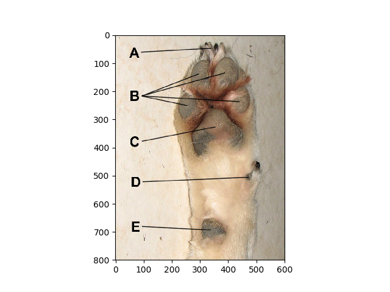

Note
Click here to download the full example code
Basic Feature Representation Classification Pipeline¶
This is a basic example using the pipeline to learn a feature representation of the time series data
Out:
X Shape: (3419, 100, 6)
N series in train: 105
N series in test: 35
N segments in train: 3419
N segments in test: 1258
Accuracy score: 0.7170111287758346
X Shape: [3426]
X Shape: [3557]
X Shape: [3535]
X Shape: [3513]
CV Scores: fit_time score_time test_score train_score
0 0.498771 0.098042 0.735412 1.0
1 0.520364 0.091900 0.821429 1.0
2 0.514201 0.090359 0.737303 1.0
3 0.502774 0.090210 0.763746 1.0
Features: ['std_0', 'std_1', 'std_2', 'std_3', 'std_4', 'std_5', 'min_0', 'min_1', 'min_2', 'min_3', 'min_4', 'min_5', 'mse_0', 'mse_1', 'mse_2', 'mse_3', 'mse_4', 'mse_5', 'median_0', 'median_1', 'median_2', 'median_3', 'median_4', 'median_5', 'mean_0', 'mean_1', 'mean_2', 'mean_3', 'mean_4', 'mean_5', 'var_0', 'var_1', 'var_2', 'var_3', 'var_4', 'var_5', 'max_0', 'max_1', 'max_2', 'max_3', 'max_4', 'max_5', 'mnx_0', 'mnx_1', 'mnx_2', 'mnx_3', 'mnx_4', 'mnx_5', 'abs_energy_0', 'abs_energy_1', 'abs_energy_2', 'abs_energy_3', 'abs_energy_4', 'abs_energy_5', 'kurt_0', 'kurt_1', 'kurt_2', 'kurt_3', 'kurt_4', 'kurt_5', 'skew_0', 'skew_1', 'skew_2', 'skew_3', 'skew_4', 'skew_5']
# Author: David Burns
# License: BSD
import matplotlib.image as mpimg
import matplotlib.pyplot as plt
import numpy as np
import pandas as pd
from sklearn.ensemble import RandomForestClassifier
from sklearn.metrics import f1_score, make_scorer
from sklearn.model_selection import train_test_split, cross_validate
from sklearn.preprocessing import StandardScaler
from seglearn.base import TS_Data
from seglearn.datasets import load_watch
from seglearn.pipe import Pype
from seglearn.transform import FeatureRep, SegmentX
# seed RNGESUS
np.random.seed(123124)
# load the data
data = load_watch()
X = data['X']
y = data['y']
# create a feature representation pipeline
clf = Pype([('segment', SegmentX()),
('features', FeatureRep()),
('scaler', StandardScaler()),
('rf', RandomForestClassifier(n_estimators=20))])
# split the data
X_train, X_test, y_train, y_test = train_test_split(X, y, test_size=0.25)
clf.fit(X_train, y_train)
score = clf.score(X_test, y_test)
print("N series in train: ", len(X_train))
print("N series in test: ", len(X_test))
print("N segments in train: ", clf.N_train)
print("N segments in test: ", clf.N_test)
print("Accuracy score: ", score)
# now lets add some contextual data
Xc = np.column_stack((data['side'], data['subject']))
Xt = np.array(data['X'])
X = TS_Data(Xt, Xc)
y = np.array(data['y'])
# and do a cross validation
scoring = make_scorer(f1_score, average='macro')
cv_scores = cross_validate(clf, X, y, cv=4, return_train_score=True)
print("CV Scores: ", pd.DataFrame(cv_scores))
# lets see what feature we used
print("Features: ", clf.steps[1][1].f_labels)
img = mpimg.imread('feet.jpg')
plt.imshow(img)
Total running time of the script: ( 0 minutes 4.224 seconds)